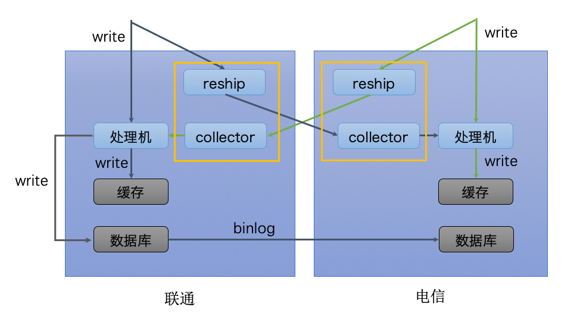

跨云服务的负载均衡
- 通过DNS实现负载均衡
- 私有云通过LVS和Nginx实现四层和七层的负载均衡
- 阿里云通过SLB和Nginx实现四层和七层的负载均衡
跨云服务的数据同步
- 私有云和阿里云之间架设专线
- 缓存放公有云，穿透后访问私有云的数据库
容器运维
流量切换
- DNS 层的切换主要是针对大规模流量增长的情况
- Nginx 层的切换主要是针对私有云内某个机房的 Java Web 容量不足或者服务有问题的时候，需要把这个机房的一部分流量切换到其他机房
Service Mesh原理
#####SideCar

- 基于 iptables 的网络拦截
- 采用协议转换的方式
#####Control Plane
- Control Plane
- 服务发现。服务提供者会通过 SideCar 注册到 Control Plane 的注册中心，这样的话服务消费者把请求发送给 SideCar 后，SideCar 就会查询 Control Plane 的注册中心来获取服务提供者节点列表。
- 负载均衡。SideCar 从 Control Plane 获取到服务提供者节点列表信息后，就需要按照一定的负载均衡算法从可用的节点列表中选取一个节点发起调用，可以通过 Control Plane 动态修改 SideCar 中的负载均衡配置。
- 请求路由。SideCar 从 Control Plane 获取的服务提供者节点列表，也可以通过 Control Plane 来动态改变，比如需要进行 A/B 测试、灰度发布或者流量切换时，就可以动态地改变请求路由。
- 故障处理。服务之间的调用如果出现故障，就需要加以控制，通常的手段有超时重试、熔断等，这些都可以在 SideCar 转发请求时，通过 Control Plane 动态配置。
- 安全认证。可以通过 Control Plane 控制一个服务可以被谁访问，以及访问哪些信息。
- 监控上报。所有 SideCar 转发的请求信息，都会发送到 Control Plane，再由 Control Plane 发送给监控系统，比如 Prometheus 等。
- 日志记录。所有 SideCar 转发的日志信息，也会发送到 Control Plane，再由 Control Plane 发送给日志系统，比如 Stackdriver 等。

容量评估
选择合适的压测指标
- 一类是系统类指标，比如机器的 CPU 使用率、内存占用量、磁盘 I/O 使用率以及网卡带宽等
- 一类是服务类指标，比如接口响应的平均耗时、P999 耗时、错误率
压测获取单机的最大容量
- 单机压测一般有两种方式，一种是通过日志回放等手段，模拟线上流量来对单机进行压测；一种是通过 TCP-Copy 的方式，把线上机器的流量拷贝过来对单机进行压测
- 集群压测是对整个集群进行压测，以获取单机的最大容量。一般做法是通过不断把线上集群的节点摘除，以减少机器数的方式，来增加线上节点单机的流量，从而达到压测的目的。
获取集群的实际运行负荷
- 统计每台单机在不同耗时区间内的请求数，推送到集中处理的地方进行聚合，将同一个集群内的单机位于不同耗时区间内的请求进行汇总，就得到整个集群的请求在不同耗时区间内的分布了，再利用区间加权的方式就可以计算整个集群的运行负荷
扩容缩容
- 按数量和比例扩容
- 逐步缩容
- 防止瞬间抖动，可以每分钟采集一次系统的水位线，一共采集 5 个点，只有 5 个点里有 3 个点满足扩容条件，才真正触发扩容
多机房负载均衡

多机房数据同步
主从机房架构
独立机房架构
- 通过一个叫 WMB 的消息同步组件把各自机房的写请求同步一份给对方机房，每个机房的处理机接收到写请求后更新各自机房的缓存，只有一个机房会更新数据库，其他机房的数据库通过 MySQL 的 binlog 同步机制实现数据同步
WMB消息同步组件
- reship，负责把本机房的写请求分发一份给别的机房。
- collector，负责从别的机房读取写请求，然后再把请求转发给本机房的处理机。
- MCQ消息队列
- RPC调用
多机房数据的一致性
- 系统会给每一次写请求生成一个全局唯一的 requestId
- 是处理成功或者失败都记录一条包含 requestId 和机房标记的处理日志，并写到 Elasticsearch 集群上去
- 通过一个定时线程，每隔 1 分钟去扫描 Elasticsearch 集群上的日志，找出包含同一个 requestId 的不同机房的处理日志
- 如果有的机房某一阶段处理失败，则可以根据日志信息重试该阶段直到成功，从而保证数据的最终一致性
DCP整体架构
编排层
- 服务依赖
- 服务发现
- nginx-upsunc-module
- Motan RPC
- 自动扩缩容
- 依靠容量决策支持系统
微博Devops
- CI（Continuous Integration），持续集成。开发完成代码开发后，能自动地进行代码检查、单元测试、打包部署到测试环境，进行集成测试，跑自动化测试用例。
- CD（Continuous Deploy），持续部署。代码测试通过后，能自动部署到类生产环境中进行集成测试，测试通过后再进行小流量的灰度验证，验证通过后代码就达到线上发布的要求了，就可以把代码自动部署到线上。
容器调度
服务编排
- 服务依赖
- 服务发现 基于nginx的服务发现 基于注册中心的服务发现
- 自动扩缩容
解决方案
平台功能
服务管理
- 服务上下线
- 节点添加和删除
- 服务查询
- 服务节点查询
服务治理
服务监控
- 整体监控 服务依赖拓扑图，将整个系统内服务间的调用关系和依赖关系进行可视化的展示
- 一个是具体服务监控，比如服务的 QPS、AvgTime、P999 等监控指标
问题定位
- 一个是宏观层面，即通过服务监控来发觉异常，比如某个服务的平均耗时异常导致调用失败
- 一个是微观层面，即通过服务追踪来具体定位一次用户请求失败具体是因为服务调用全链路的哪一层导致的
日志查询
服务运维
微服务治理平台
API层
数据存储DB层
开源
服务治理平台
本地配置
配置中心
- 配置注册功能
- 配置反注册功能
- 配置查看功能
- 配置变更订阅功能
配置中心的使用场景
配置中心
- Spring Cloud Config
- Disconf
- Apollo
超时
- 参照服务提供者线上真实的服务水平，取 P999 或者 P9999 的值，也就是以 99.9% 或者 99.99% 的调用都在多少毫秒内返回为准。
重试
双发
- 一个简单的提高服务调用成功率的办法就是每次服务消费者要发起服务调用的时候，都同时发起两次服务调用，一方面可以提高调用的成功率，另一方面两次服务调用哪个先返回就采用哪次的返回结果
- 备份请求”（Backup Requests），它的大致思想是服务消费者发起一次服务调用后，在给定的时间内如果没有返回请求结果，那么服务消费者就立刻发起另一次服务调用
- 最大重试比例可以设置成 15%
熔断
- 熔断就是把客户端的每一次服务调用用断路器封装起来，通过断路器来监控每一次服务调用。如果某一段时间内，服务调用失败的次数达到一定阈值，那么断路器就会被触发，后续的服务调用就直接返回，也就不会再向服务提供者发起请求了。
- 熔断中断路器
- Closed状态
- Open状态: 当服务调用失败次数达到一定阈值时，断路器就会处于开启状态，后续的服务调用就直接返回，不会向服务提供者发起请求
- Half Open 状态：当断路器开启后，每隔一段时间，会进入半打开状态，这时候会向服务提供者发起探测调用，以确定服务提供者是否恢复正常。如果调用成功了，断路器就关闭；如果没有成功，断路器就继续保持开启状态，并等待下一个周期重新进入半打开状态。

Hystrix
- 滑动窗口包含 10 个桶，每个桶时间宽度为 1 秒，每个桶内记录了这 1 秒内所有服务调用中成功的、失败的、超时的以及被线程拒绝的次数。当新的 1 秒到来时，滑动窗口就会往前滑动，丢弃掉最旧的 1 个桶，把最新 1 个桶包含进来。
- 0 个桶内记录的所有失败的、超时的、被线程拒绝的调用次数之和除以总的调用次数就是滑动窗口内所有服务的调用的失败率
总结
思考题
- Hystrix 采用了线程池隔离的方式来实现不同的服务调用相互之间不影响，你认为这种方式的优缺点有哪些？
- （1）线程池隔离模式：使用一个线程池来存储当前的请求，线程池对请求作处理，设置任务返回处理超时时间，堆积的请求堆积入线程池队列。这种方式需要为每个依赖的服务申请线程池，有一定的资源消耗，好处是可以应对突发流量（流量洪峰来临时，处理不完可将数据存储到线程池队里慢慢处理）
- （2）信号量隔离模式：使用一个原子计数器（或信号量）来记录当前有多少个线程在运行，请求来先判断计数器的数值，若超过设置的最大线程个数则丢弃改类型的新请求，若不超过则执行计数操作请求来计数器+1，请求返回计数器-1。这种方式是严格的控制线程且立即返回模式，无法应对突发流量（流量洪峰来临时，处理的线程超过数量，其他的请求会直接返回，不继续去请求依赖的服务）
- 优点：可以防止某个服务占满可以使用的线程，影响其他服务
- 缺点：如果运行线程特别多，线程上下文切换成本较高。
幂等性
- 对同一个系统，使用同样的条件，一次请求和重复的多次请求对系统资源的影响是一致的
- MVCC
- 去重表
- Token机制